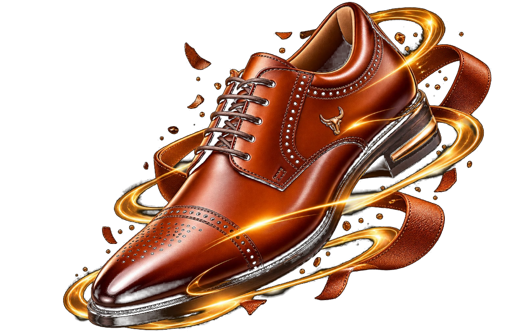
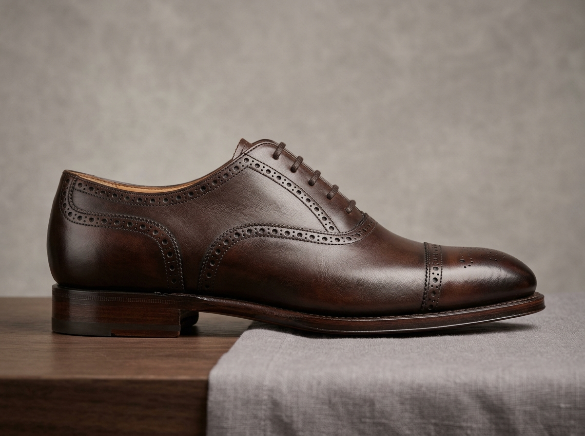
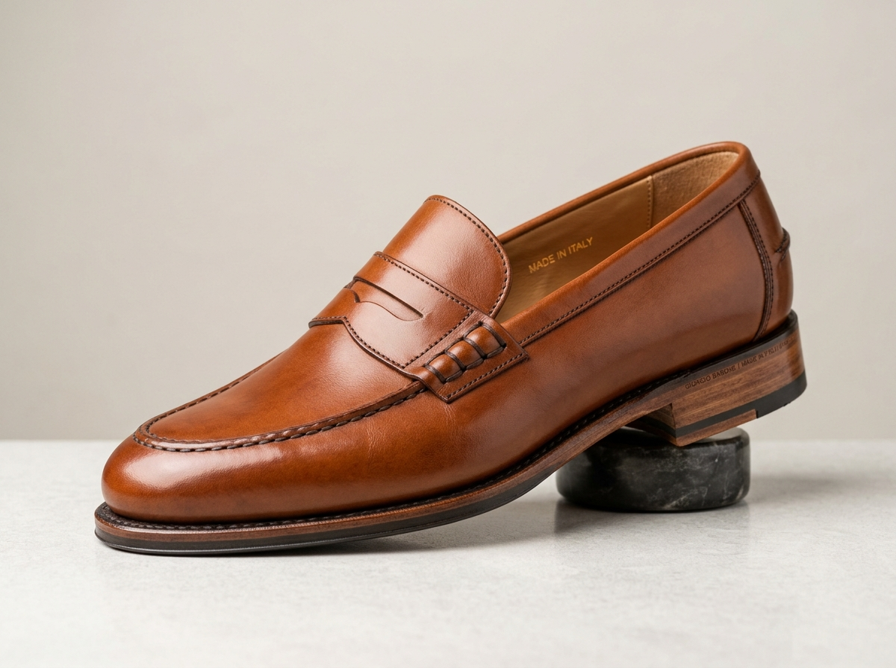
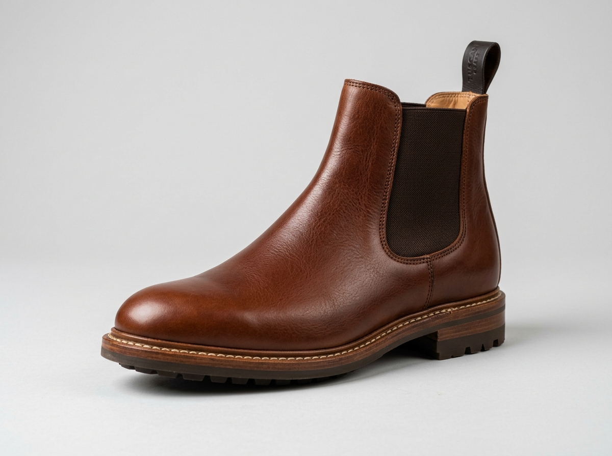
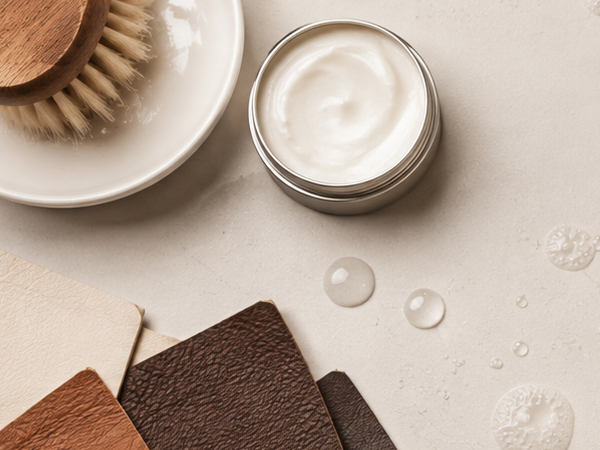
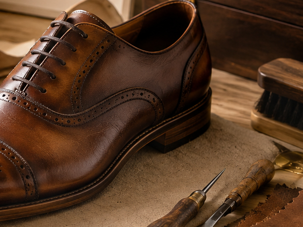
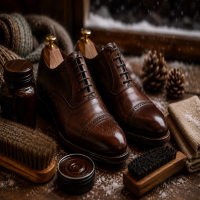
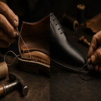

Handcrafted Footwear
Built For Decades.
Master leather footwear manufacturing engineered exclusively for luxury private labels and bespoke houses worldwide. We combine century-old Goodyear welting with hand-burnished Tuscan vegetable calfskin to craft footwear collections of timeless structural longevity.

Founding Year
Pairs Crafted Yearly
Manual Bench Steps
Satisfaction Rate
Footwear Crafted to Perfection

Captoe Oxford
Goodyear-welted Balmoral oxford in vegetable-tanned French calfskin with oak-bark soles.

Tuscan Chelsea
Whole-cut Chelsea boot with heavy-gauge elastic side gores and Dainite studded rubber outsoles.

Penny Loafer
Blake-stitched saddle penny loafer with hand-sewn beefroll detailing and Italian leather soles.

Patina Wholecut
Single-piece crust calfskin hand-painted with layered alcohol dyes and violin fiddleback waist.
The Vernon & Vale Process
Hide Selection & Clicking
Master clickers inspect tight-grain Tuscan hides over illuminated tables, orienting cut patterns along the spine grain for dimensional stability.
72-Hour Wooden Lasting & Welt
Uppers rest 72 hours over carved beechwood lasts under tension. Heavy-gauge linen cord stitches the Goodyear welt and natural granulated corkbed.
Iron Wax Burnish & Export QC
Heated friction irons seal carnauba waxes into sole edges. Pairs undergo 14-point benchmark optical inspections before insured worldwide export.
The Atelier in Motion
Experience the rhythmic precision of master cordwaining: from hand-clicking full-grain skins to channel grooving, welt lock-stitching, and mirror gloss burnishing.
Generational Cordwaining & Sole Channeling
Filmed on location in our European workshop benches.
Signature Footwear Capsules
 Goodyear 360°
38 Bench Hours
Goodyear 360°
38 Bench Hours
The Sovereign Formal Line
Balmorals, Derbies, and Monkstraps hand-lasted on our sculpted chiseled almond lasts using grade-A French Boxcalf.

Stormwelted 44 Bench HoursThe Alpine & Urban Boots
Dainite studded and commando lug soles paired with water-impervious storm welts and heavy Tuscan pull-up hides.

Bologna Saccotto 28 Bench HoursThe Mediterranean Loafers
Featherweight tubular moccasins and Belgian penny slip-ons engineered for unlined, barefoot sockless flexibility.

Museum Crust Hand-Dyed 52 Bench HoursThe Museum Patina Series
Raw unfinished crust calfskin dyed stroke-by-stroke with alcohol stains, beveled fiddleback waists, and lemonwood pegs.
Shoe Construction Architectures
Private label clients can select from four master structural welt disciplines, tailored precisely to target price tiers, flexibility, and regional climate resilience.
Goodyear Welted
Lockstitch Inseam & Gemming Rib
The undisputed benchmark in handcrafted footwear. A perimeter leather welt is lockstitched directly through both the upper and insole rib, encasing an insulated organic cork chamber that gradually molds to the wearer's anatomy.
- Zero upper disruption during full outsole replacement
- Moisture-resistant labyrinth barrier prevents water ingress
- 16-gauge spring-tempered steel shank supports foot arch
Blake Rapid
Dual Midsole Lock & Fiddleback Waist
The Italian sartorial compromise pairing svelte, close-cut sole waists with true exterior resolability. Connects the insole to an intermediary leather midsole, followed by a secondary exterior Rapid stitch to the outsole.
- Unmatched sleekness along the inner waist and arch
- 35% lighter footbed mass compared to traditional welts
- Midsole isolates footbed during bottom sole replacement
Norwegian (Tirolese)
Alpine Double-Braided Storm Welt
Originating in Alpine mountain expeditions. The upper leather is turned 90° outward rather than tucked underneath, then anchored with twin hand-waxed braided threads forming an impermeable physical moisture barrier.
- Deflects torrential downpours, mountain slush, and snow
- Iconic artisan braided white stitch perimeter detailing
- Built for heavy mountain boots and rugged storm oxfords
Bologna (Saccotto)
Tubular 360° Glove Envelope
The pinnacle Italian technique for featherweight loafers and dress slippers. The upper lining is machine-sewn into a continuous cylindrical pouch ("saccotto") enclosing the foot with no rigid insole board.
- Glove-soft slipper interior hugs anatomical foot contours
- Effortless heel-to-toe stride with no foot fatigue
- Choice construction for Mediterranean summer loafers
What Luxury Retailers Say
"We transitioned our luxury footwear line from our previous overseas factory to Vernon & Vale three years ago. The consistency of their Goodyear welting and French boxcalf sourcing has dropped our customer return rate to under 0.4%."

"Their private label sample development is lightning-fast without sacrificing bench quality. Within four weeks we had custom lasts carved, prototypes approved, and our 2,500-pair Chelsea boot production on schedule."

"The museum patina wholecuts they produce for our private vault are works of art. The hand-painted depth is something machines simply cannot replicate. Truly world-class footwear manufacturing."
Ready to Scale Your Footwear Label?
From custom lasts and private label debossing to volume export runs, partner with Vernon & Vale for European bench quality and transparent manufacturing.
Submit B2B Bulk Enquiry